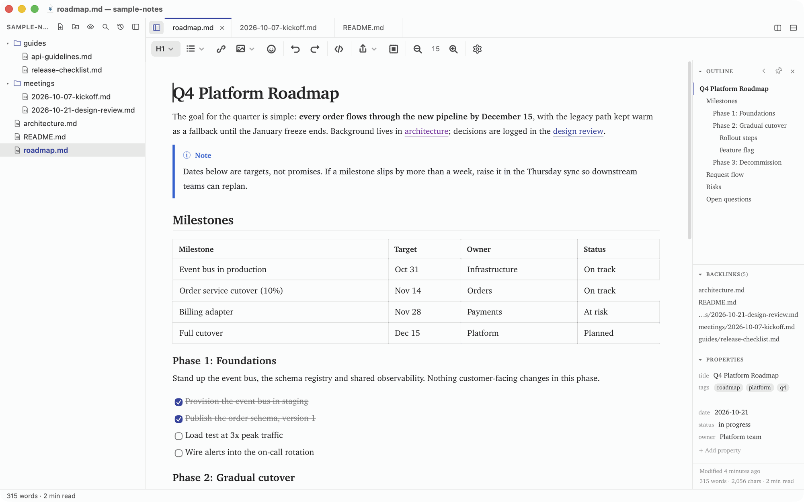
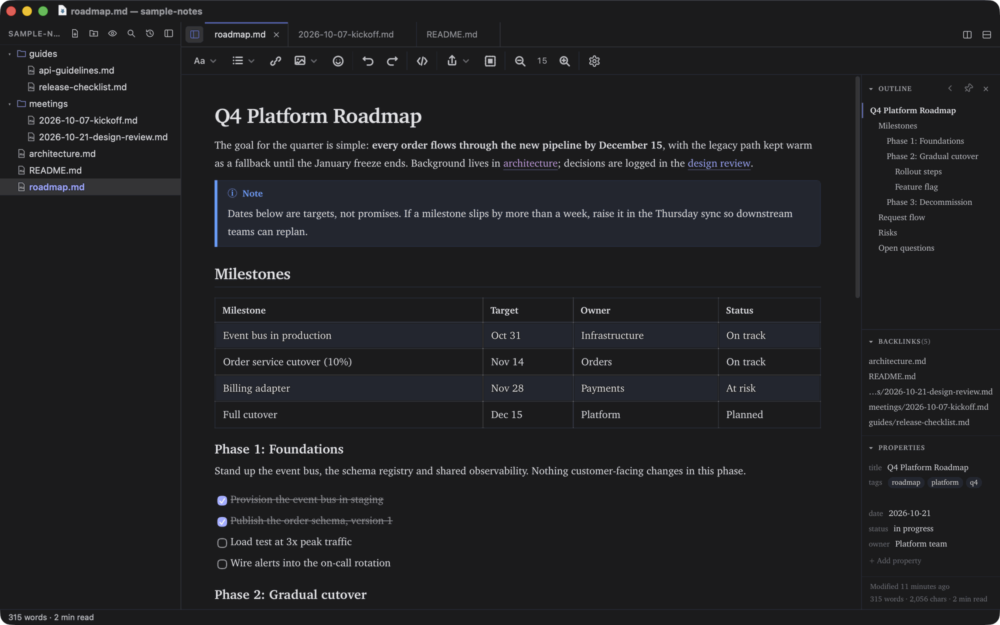
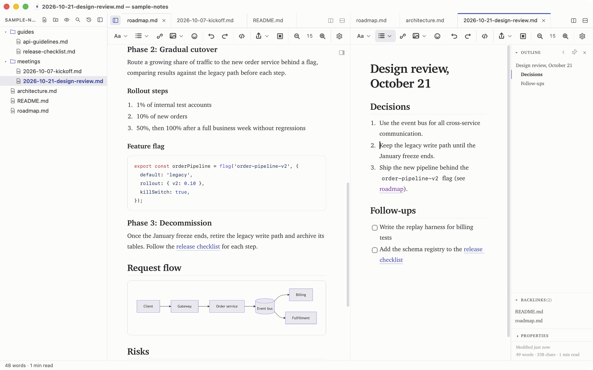
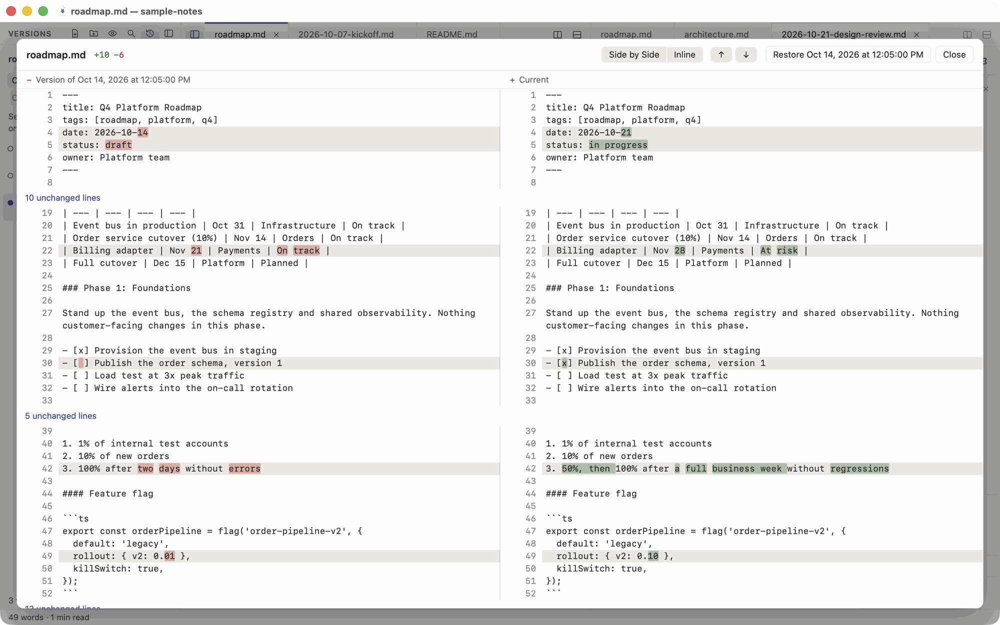

MikeDown Desktop
A free WYSIWYG markdown editor for macOS and Windows, with a Linux preview. Double-click a .md file, or open a folder of notes, and write.
Signed and notarized on macOS, signed on Windows. Updates install from inside the app.
Download for Linux (preview) · x86_64 AppImage, @@LINUX_MB@@ MB
Unsigned, no auto-update. Run chmod +x on it first. On Arch it needs fuse2, or launch it with --appimage-extract-and-run.
Files and folders
Open one file, or a whole folder with a file tree, tabs, split panes and folder-wide search.
Version history
Each save can keep a snapshot next to your notes, with a side-by-side diff and one-click restore.
Plain markdown
Your files stay ordinary .md text. Export to HTML or PDF when you need to share.
Screenshots








Also for VS Code
The same editor runs inside Visual Studio Code. Open any .md file in an editor tab and edit it as a formatted document, with Git and your other extensions beside it.
For developers
The editor is on npm as a web component and as React, Vue and Angular packages.
Build it into your appInstall
Mac
- Open the .dmg and drag MikeDown to Applications.
- Requires macOS 12 Monterey or later.
Windows
- Run the installer. It installs for your user account, no administrator needed.
- Requires Windows 10 version 1809 or later. The Microsoft Edge WebView2 runtime is installed if missing.
Linux (preview)
- Download the AppImage, make it executable (
chmod +x MikeDown-*.AppImage) and run it. - x86_64 only. Unsigned, and it does not update itself: download new versions from this page.
- Needs FUSE 2 (
fuse2on Arch,libfuse2on Debian and Ubuntu). Without it, run./MikeDown-*.AppImage --appimage-extract-and-run.
Release notes
Privacy
MikeDown Desktop has no telemetry, no analytics and no account. Your documents never leave your computer.
The only network request the app makes on its own is the update check: shortly after launch and then every few hours it downloads a small update file (for example latest-darwin-aarch64.json, or latest.json) from this site to see whether a newer version exists. You can turn it off in Settings > App (Automatically check for updates). Links you click open in your browser, and images in your documents that point at web addresses load from those addresses.
This page sets no cookies and loads no tracking scripts.